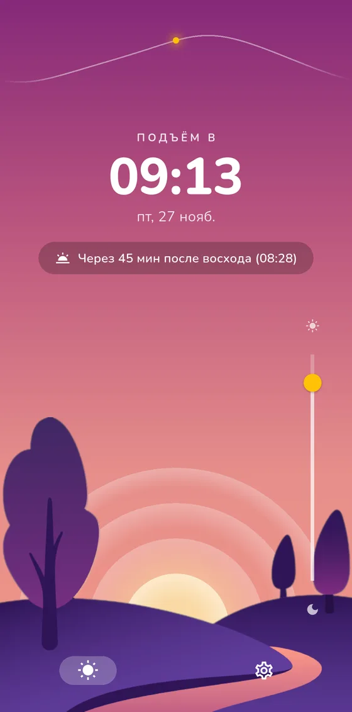

Время восхода понемногу меняется каждый день. Ваш будильник должен меняться вместе с ним. Wake at Sunrise рассчитывает завтрашний восход для вашего точного места и звонит именно тогда — или за столько минут до или после него, сколько вам удобно.

Как это работает
Приложению нужно знать, в какой точке Земли вы просыпаетесь. Это единственное, о чём оно просит, — и эти данные остаются на вашем телефоне.
Звонок точно на восходе или за несколько минут до или после него. Выберите дни недели, по которым будильник включён.
Каждую ночь будильник незаметно перенастраивается на завтрашний восход. Рассвет смещается в течение года — и время вашего пробуждения смещается вместе с ним.
Возможности
Одна задача — будить вас на рассвете — и она выполнена тщательно.
Не среднее по городу, а реальное время восхода там, где находится ваш телефон, рассчитанное на устройстве по астрономическим формулам.
Укажите, сколько вы хотите спать и сколько времени вам нужно на подготовку ко сну. Приложение отсчитает назад от завтрашнего восхода и вовремя напомнит, что пора ложиться.
График смещения восхода за весь год — с точкой на сегодняшнем дне, — чтобы вы знали, к каким утрам идёт дело.
Звонит поверх экрана блокировки, переживает перезагрузку и может звонить со своей громкостью, поэтому тихий телефон не означает проспанное утро.
Ни сервиса погоды, ни сервера. Восход рассчитывается локально, поэтому будильник работает и в режиме полёта, и вдали от цивилизации.
Полностью локализовано; интервал повтора, громкость и дни недели настраиваются.
Конфиденциальность
Единственное заметное разрешение приложения — доступ к геолокации, и оно используется ровно для одного: чтобы рассчитать восход там, где вы находитесь.
Ранний доступ
Скоро начнётся закрытое бета-тестирование Wake at Sunrise на Android. Вступите в группу тестировщиков, и вы получите ссылку для установки, как только тест откроется.
Вступить в группу тестировщиковБесплатно, ничего покупать не нужно. Используйте тот аккаунт Google, с которого будете устанавливать приложение, — так Google Play поймёт, что приложение нужно вам показать.
Ранний доступ
Wake at Sunrise проходит закрытое бета-тестирование на Android. Два быстрых шага — и приложение у вас, а ваши отзывы помогут подготовить запуск.
Google Play покажет вам приложение только после того, как ваш аккаунт окажется в списке тестировщиков. Уже вступили? Переходите к шагу 2.
Вступить в группуОткройте эту ссылку на телефоне, на котором будете тестировать, войдя в тот же аккаунт Google.
Открыть тест в Google PlayТестирование бесплатное, и покупать ничего не нужно. Пожалуйста, не удаляйте приложение пару недель — Google учитывает тестировщиков, которые пользуются им без перерыва, прежде чем разрешить запуск нового приложения.
Скачать
Wake at Sunrise доступен в Google Play. Бесплатно, без рекламы, без аккаунта.
Скачать в Google PlayРанний доступ
Закрытое бета-тестирование Wake at Sunrise на Android подходит к концу. Хотите участвовать? Напишите короткое письмо, и вы получите ссылку.
Запросить ссылку на бета-версию